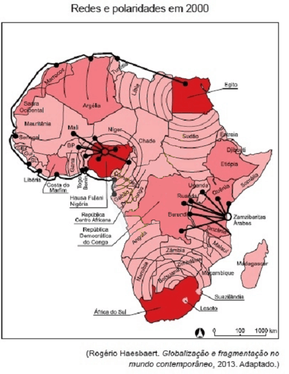
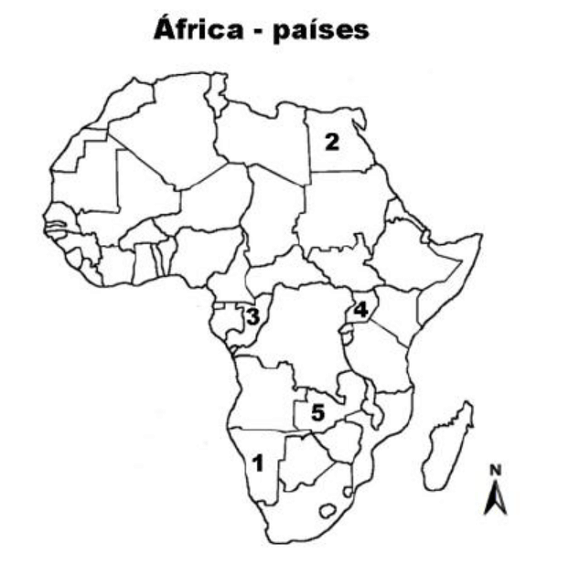
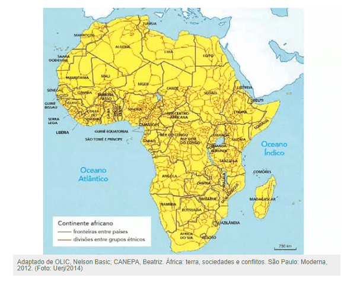

Conteúdo:
Questão 01
(UEG-GO 2014) Corresponde à região do Sahel, no continente africano:
a) região industrial da África do Sul, onde se instalou o maior parque industrial da África.
b) região central da Angola, onde existe o mais moderno projeto de irrigação do continente africano.
c) faixa de transição entre o deserto do Saara e as pastagens e matas ao sul deste deserto.
d) cadeia de montanhas no centro da República Democrática do Congo, recoberta por matas tropicais.
Questão 02
(ENEM 2021)
“Os anos 1960 e início dos 1970 foram anos de muitas dificuldades para os povos africanos habitantes, principalmente, das áreas que bordejam o deserto do Saara — Sahel — devido ao período de acentuada seca que se abateu sobre a região. Não descartando as implicações de ordem natural daquele fenômeno, deve-se observar que o aumento de seres humanos e suas manadas passou a pressionar muito fortemente o frágil ecossistema local e regional, o que resultou na considerável expansão anual do deserto sobre aquelas regiões.”
MENDONÇA, F. A. Geografia e meio ambiente. São Paulo: Contexto, 1994 (adaptado).
O problema socioambiental apresentado emergiu como resultado da interação entre
a) relevo e extração mineral.
b) bioma e atividade turística.
c) paisagem e ocupação territorial.
d) preservação e mercado consumidor.
Questão 03
(FMJ 2016)

Os dados apresentados pelo mapa indicam o exercício da primazia econômica no continente africano, destacando os países-polos:
a) Egito, África do Sul e Nigéria.
b) África do Sul, Tanzânia e Quênia.
c) Argélia, Marrocos e Costa do Marfim.
d) Tanzânia, Angola e Camarões.
e) Nigéria, Mali e Uganda.
Questão 04
(UFRGS 2014) Observe abaixo a figura do continente africano com os países identificados pelos números de 1 a 5.

Fonte: http://www.gangamacota.blogspot.com.br. Acesso em: 23 set. 2013.
No bloco superior abaixo, estão listados países do continente africano; no inferior, a paisagem desses países. Associe adequadamente o bloco inferior ao superior.
(1) Namíbia
(2) Egito
(3) Congo
(4) Uganda
(5) Zâmbia
( ) A alta nebulosidade que se desenvolve sobre este país, em virtude da insolação intensa, propicia o desenvolvimento de uma floresta tropical bastante biodiversa.
( ) As águas frias do oceano, neste país, dificultam a formação de nuvens, criando condições para o surgimento de um deserto litorâneo.
( ) Este país, famoso pela paisagem desértica, tem 95% de seu território coberto por areias, em que a amplitude térmica é grande, oscilando entre 50º C durante o dia e -5º C à noite.
( ) O clima, neste país, é amenizado pela altitude e alterna estação chuvosa e seca. Tal característica justifica a cobertura de savanas sobre a maior parte do território, que abriga grande variedade de animais.
A sequência correta de preenchimento dos parênteses, de cima para baixo, é
a) 4 – 5 – 3 – 1.
b) 3 – 2 – 5 – 1.
c) 5 – 1 – 2 – 3.
d) 2 – 1 – 5 – 4.
e) 3 – 1 – 2 – 5.
Questão 05
(UERJ 2014) Uma das contradições que afetam as sociedades africanas é a não correspondência entre as fronteiras territoriais dos diversos Estados-nacionais e as divisões entre grupos étnicos locais, como se observa no mapa abaixo:

Na maioria dos países africanos, essa contradição provoca, principalmente, o seguinte efeito:
a) déficit comercial.
b) instabilidade política.
c) degradação ambiental.
d) dependência financeira.
Comentário:
A expansão imperialista europeia na África, no decorrer do século XIX, ocasionou a constituição de áreas de influência e dominação colonial cujas fronteiras territoriais, na maioria dos casos, não coincidiam com as divisões linguísticas e étnicas dos povos locais.
No curso das lutas de descolonização, nas décadas de 1950 a 1970, e dos processos de constituição de muitos dos Estados-nacionais que integram a África na atualidade, as fronteiras territoriais desses Estados estruturaram-se a partir das heranças da dominação imperialista europeia. Duas consequências principais se destacam nesse contexto: por um lado, as diversidades étnicas no interior de diversos territórios nacionais, em especial nas regiões da África Central, associaram-se a polaridades entre grupos e partidos políticos, muitas vezes em constante disputa pelo controle da direção do poder estatal; por outro lado, a diversidade étnica de determinadas regiões se manifesta também na emergência de reivindicações pelo reconhecimento da autonomia de grupos específicos.
Esse panorama indica o quanto as diferenças entre fronteiras étnicas e nacionais no continente africano, herança direta do imperialismo e da descolonização, contribuíram para a instabilidade política de diversos países.
Questão 06
(UECE 2015) Há muito tempo o continente africano tem sido palco de conflitos violentos. Em Angola, o confronto envolveu organizações armadas que disputavam o poder desde a independência daquele país. Na República Democrática do Congo, as disputas envolveram o Estado e grupos armados; na Serra Leoa, a guerra civil durou de 1991 a 2002. Intermediários interessados na guerra, em alguns casos, a estimulam fornecendo armas e soldados; em outros casos, apoiam governos ou a guerrilha de oposição. Os produtos disputados pelo Estado e por grupos armados nesses três países Africanos são
a) diamante e petróleo.
b) defensivos agrícolas e gás natural.
c) metais e produtos farmacêuticos.
d) alimentos industrializados e tecidos.
Questão 07
(IFRR 2018) A Maioria dos estados paralelos do Oriente médio é de natureza teocrática, levando quase sempre uma política ao radicalismo. Esses Estados só podem ser controlados por ditaduras onde o poder é concentrado na mão de um homem que por meio da repressão controla esses insurgentes.
Iniciada na maioria das vezes por grupos dissidentes, o conflito no Oriente Médio ganha maior proporção devido:
a) à continuação do apoio extremamente armado, do governo coreano, em território palestino gerando ódio e revolta perante ao povo israelita.
b) o forte apoio norte americano à presença de Israel na região. Fator esse gerador de instabilidade, pois se Israel não for um país extremamente armado e apoiado por potências corre o risco de não mais existir.
c) às perspectivas que são positivas, pois tem se intensificado focos separatistas em vários países do Oriente Médio, como é o caso da Arábia Saudita e Emirados Árabes.
d) o grau de calmaria que passa atualmente o Oriente Médio, devido a intervenção da ONU, podendo levar o fim da guerra civil na Síria; fato que não tem agradado os Estados Unidos.
e) a presença de grupos armados em territórios da croácia, pois a área possui as maiores fontes de energia, principalmente o carvão mineral, o que acarretaria num colapso energético.
Questão 08
(SLMANDIC 2018) Leia o texto.
“Às seis e meia da manhã, os aviões atacaram e vi que tinha sido em frente à casa do meu avô. Fiquei tonto e desmaiei junto à garagem. Acordei neste hospital. Não sei se a minha família está morta ou viva. O relato, feito entre lágrimas à CNN, é de Mazin Yusif, de 13 anos, oriundo de Khan Sheikhun, localidade da província de Idlib que foi alvo do que se pensa ser o pior ataque com armas químicas em anos em território sírio.”
(Disponível: http://www.dn.pt/mundo/interior/ataque-quimico-na-siria-eua-ameacam-agir-sem-a-onu-5774497.html. Publicado: 08-04-2017. Acesso: 02 set. 2017.)
As motivações que levaram ao ataque químico, relatado pelo jovem Mazin, podem ser compreendidas como resultado
a) da luta entre o regime de Bashar-el-Assad, as forças da oposição ao seu regime e os fundamentalistas árabes islâmicos.
b) do desejo dos árabes de experimentar um regime político baseado em princípios liberais burgueses.
c) dos interesses econômicos relacionados à agroindústria, principal fonte econômica dos países árabes.
d) do interesse russo de anexar territórios árabes ao seu, por meio de uma política imperialista bélica.
e) do desejo dos sírios de se ocidentalizarem, o que justifica a reação de grupos fundamentalistas.
Questão 09
(UNICAMP 2021)
“A região denominada Golfo Pérsico abrange, além do próprio golfo, os países que se situam inteira ou parcialmente no seu litoral, a saber: Kuwait, Bahrein, Qatar, Emirados Árabes Unidos e Omã. A Arábia Saudita também é considerada parte da região, pois, embora a maior parte de seu território seja continentalizada e as principais cidades se situem no interior ou próximas ao Mar Vermelho, ela tem mais de 600 quilômetros de litoral voltado para o Golfo, com algumas cidades costeiras (AdDammam, Al-Jubail) e complexas ligações viárias com Qatar, Bahrein e Kuwait.”
(L. A. B. Venturi, Água no Oriente Médio: o fluxo da paz. São Paulo: Editora Sarandi, 2015, p. 93.).
Litoral é uma faixa de terra emersa, banhada pelo mar, que pode apresentar diferentes configurações. Para os países mencionados no texto, a presença do litoral em formato de Golfo é fundamental para o escoamento por via marítima do petróleo, a principal commodity do Oriente Médio. Assinale a alternativa que define corretamente “Golfo”.
a) Reentrância do mar sobre o continente, possuindo grandes dimensões e com uma forma mais aberta para o mar.
b) Parte do continente que avança para o oceano, com grandes extensões e cercada de água por quase todos os lados.
c) Barreira formada no mar e localizada próxima da praia, podendo ser formada por rochas, corais e restos de animais marinhos.
d) Canais que ligam rios com o mar, onde ocorre muita sedimentação, com a formação de bancos de areia e a deposição de detritos.
A questão é conceitual e tem como objetivo diferenciar as diferentes fisionomias do litoral.
a) Correta. A alternativa a traz o conceito correto de Golfo: uma reentrância do mar sobre o continente, possuindo grandes dimensões e com uma forma mais aberta para o mar.
b) Incorreta. O conceito exposto nesta alternativa é o de península, que é a parte do continente que avança para o oceano, com grandes extensões e cercada de água por quase todos os lados.
c) Incorreta. Este é o conceito de recife, uma barreira formada no mar e localizada próxima da praia, podendo ser formada por rochas, corais e restos de animais marinhos.
d) Incorreta. Este é o conceito de barra, que é o conjunto de canais que ligam rios com o mar, onde ocorre muita sedimentação, com a formação de bancos de areia e a deposição de detritos.
Questão 10
(IFRR 2018) Os curdos formam o maior grupo étnico sem um Estado do mundo. São mais de 30 milhões reivindicando um território, chamado de Curdistão, que abrange, em sua maioria, parte do leste da Turquia, além de regiões da Armênia, do Irã, do Iraque e da Síria.
Eles são um dos principais responsáveis:
a) pela delimitação de novas fronteiras, cobrando menores impostos sob os produtos alimentícios que entrar na região e desarticulação de acordos, com o apoio dos exércitos armados.
b) por operar com táticas diversas e extremistas ao povo de religião judaica, que habita o sul da Tunísia.
c) pela imposição radical do islamismo aos povos que vivem em territórios iraquiano, pregando a religião cristã.
d) por gerar conflitos com outros países, como a Sibéria e o Paquistão, que considera o Partido dos Trabalhadores do Curdistão (PKK, na sigla em turco) um grupo terrorista.
e) pelo combate ao Estado Islâmico e, por outro lado, um dos povos que mais sofre com as atrocidades do autoproclamado califado.